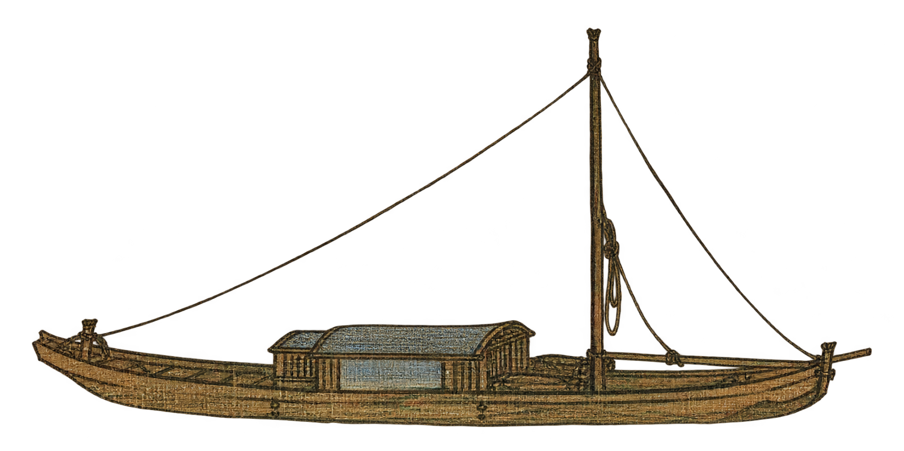
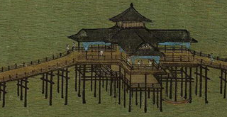

不必赶路。沿一江碧水，慢慢走进画中。
以王希孟《千里江山图》的全卷数字图像为底，从右向左展开山水。原图保留装裱、题跋与印章，未重绘山川。
小舟、分段行舟路线、环境声音与六处发现交互、六处观景提示是本网站的艺术演绎，并非原画动画或历史复原。环境声音默认关闭；卷首题诗可点击阅读简体全文。探索记录仅保存在当前浏览器。山水采用多点透视，水面不相接处以淡出转场；水磨示意与流水声音均为体验演绎。
图像：Wikimedia Commons 公有领域标记版本，39,974 × 1,600 像素。原作藏于北京故宫博物院。
卷首题诗为清代乾隆所题，诗文据故宫博物院释文，与北宋原画创作年代不同。卷尾保留原画中的元代溥光题跋。
操作：手机左滑前进、右滑回看；电脑向下滚动展开画卷，向上滚动回看。景点自动放大并展开批注；继续滚动退出景点。自由细看中，滚轮缩放、鼠标左键按住拖动平移，手机双指缩放。点击继续展卷返回原行程。方向键、空格与全卷导航也可控制行程。
江山千里望无垠，元气淋漓运以神。北宋院诚鲜二本，三唐法总弗多皴。可惊当世王和赵，已讶一堂君若臣。曷不自思作人者，尔时调鼎作何人。
此诗为乾隆后题，非北宋原画创作时所题。